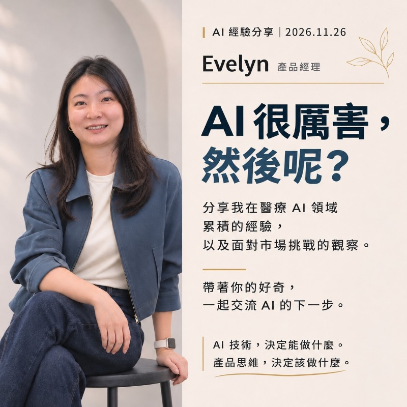

一進場就開著這頁。
請大家拿手機掃左邊 QR，按「報到」輸入碼。
掃不到、手機沒電：到報到台找幹部打勾；來賓由介紹人或幹部代為報到。
TC 8 讀書會
11/26（四）19:00
掃我報到
CXO TC8 · 斯巴達分會

02 Evelyn 林宛瑩
8:10 議題討論，8:25 來賓介紹（每位 2 分鐘，討論不要拖到來賓時間）。
當天流程
- 7:00–7:10開場 · 掃碼報到
- 7:10–7:40Joy｜你的公司真的 AI 化了嗎？
- 7:40–8:10Evelyn｜AI 很厲害，然後呢？
- 8:10–8:25主題討論｜公司 AI 化，會卡在哪？
- 8:25–8:40來賓 & 新夥伴介紹
- 8:40–8:48分會現況
- 8:48–8:58宣導事項
- 9:00–自由交流
Joy：成緯數位創意總監。走進中小企業，找出最浪費時間的那一段，改成工具，再陪員工用到會。
Evelyn：數學出身，寫過程式、做過資料分析，後來走進醫療科技做產品規劃。
一場講「怎麼導入」，一場講「導入之後」。講者上台用自己的簡報。
專題演講
主持人：羅伯特。三位上台坐定，各用一句話自我介紹（共 1 分鐘內）。
Mason：理全企業總經理，做手工具。今年 9 月自己用 AI 寫了線上請假系統（開發約三到四天，兩天多是請同仁試用），11 月公佈，線上紙本並行一個月。卡通像取自他自己的簡報。
接著翻下一頁，照三個問題討論；第 3 題「導入之後」先請 Mason 答。
主題討論
8:10–8:25，共 15 分鐘。上台的人現場選。
① 4 分鐘：請大家舉手，只收集問題，不急著回答。
② 6 分鐘：從①挑 1～2 個問題，讓三位答，再問台下有沒有不同答案。
③ 5 分鐘：先請 Mason（工廠、已導入）答，再讓 Joy、Evelyn 回應。
灰字是追問，現場冷掉再用。8:25 要交給來賓。
議題討論 － 公司 AI 化，你覺得會卡在哪？
1
卡在哪
公司導入 AI，你遇到的問題是什麼？
人、流程、資料，還是老闆？
2
怎麼解
這一題你會怎麼回答？有沒有人答案不一樣？
員工不想用怎麼帶？流程沒理清楚能直接上嗎？哪些資料能給 AI？
3
導入之後
已經導入的人，又冒出什麼新問題、新想法？
怎麼知道真的有省到？老闆自己不用，叫得動員工嗎？
6 位來賓，每位 2 分鐘，照名單順序請。
介紹人可以先幫忙講一句再交給來賓。
最後請新夥伴上台打招呼。
來賓 & 新夥伴介紹
夥伴 87、報名 29、來賓 6，現場共 35（報名數，實到看報到板）。
餐點：累計 2 次臨時取消，下次停餐一次。
分會現況 － 人數與來賓
夥伴 87 位
本月報名 29 位 · 33%
來賓 6 位，現場共 35 人
來賓每次 $1,000
請交給財務長 馬怪
每一次都收，為了維護品質
出席與請假
連續三次未到，取消會籍
單次不到，不用 LINE 幹部
會連續三次不到，先請假
取消餐點 前一天自己上網站取消；當天 12:00 前 LINE 幹部 ｜ 累計 2 次臨時取消，下次停餐一次
一個點＝一個人，總共 10,000 個點。
暗色 6,110：還沒每個月用生成式 AI。藍色 3,890：有在用。右下角那一小撮金色 44 顆：用 AI 代理，而且不只一種工具（粗估 9～44 人）。
39% 可能含重複帳號；0.1%～0.4% 是粗估，不是正式統計，被問到就照實講。
把全世界縮成 10,000 人
約 9～44 人
用 AI 代理，而且不只一種工具
粗估 0.1%～0.4%
39%：DataReportal 2026/10，可能含重複帳號。0.1%～0.4%：依 SlashData、JetBrains、Pragmatic Engineer 開發者調查粗估，非正式統計。
一句話：不是用一個更強的 AI，是請了一整組 AI 員工，還有主管。
幕僚長、行銷、原型、工程主管，都是影片裡實際展示的；幕僚長和行銷那兩段分不清是 Lauren 還是同事 Roshan 示範。
他們用 Grok Bot，我用 Claude 分派：工具不同，管法一樣。
最後一句接回第 4 頁：你卡在哪？
別人用 AI 聊天，他們在管一組 AI 員工
你講清楚要什麼、最後把關
↓
幕僚長 Bot看行事曆、追其他 Bot 的進度
↓
行銷 Bot自己開瀏覽器
發 LinkedIn
原型 Bot自己開白板
畫草圖
工程主管 Bot自己不寫程式
派給下屬 Bot 做
每個 Bot 有自己的電腦，你離開，它繼續做
Lauren Tan（Grok Bot 核心團隊工程師）等人的公開訪談與直播，依字幕整理
歡迎來找羅伯特聊聊
我們可以一起建立
你自己的 AI 邏輯、框架、資安規範
資料檔案在你能掌控下
一句話派出去，結果全部交回來
變成你的最佳秘書
會後來找我，說說你最想交給 AI 的那件事
12/5（六）歲末聚會再邀請一次。
宣導事項
12/5週六
CXO 台中歲末聚會
09:30–17:00
台中萊特薇庭 3F 釜宮
報名連結在 TC8 網站
TC8 精神
「 輸出，逼自己輸入 」
不定期小聚
10–15 人的主題交流
時間另行公告
請注意群組訊息
還沒報到的現在掃。下次見面 12/28（一）19:00。
感謝大家
下次見面 12/28（一）19:00 12 月月會